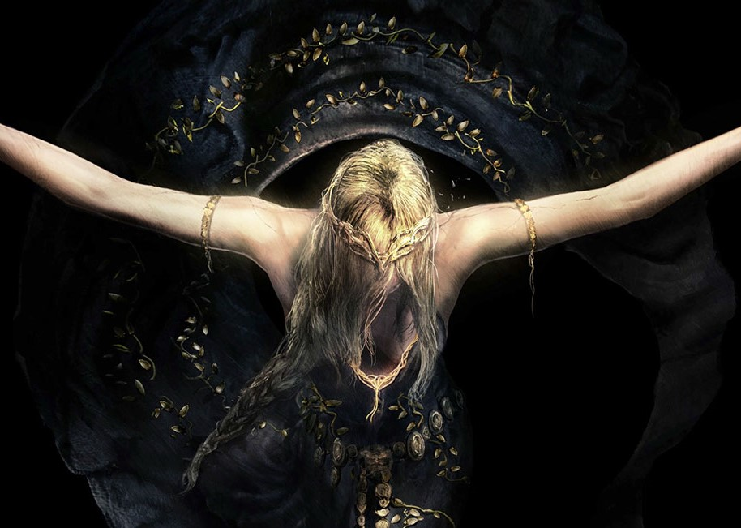
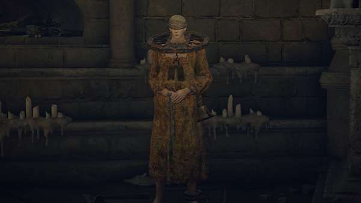
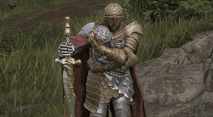

Queen Marika the Eternal is a background character in Elden Ring and Shadow of the Erdtree. She is the current ruler of the Lands Between, and the one who shattered the Elden Ring. She is central to much of the game's narrative and lore. She has many powerful Demigod offspring, who seek the Elden Ring's remaining power.
Queen Marika is the vessel for the Elden Ring, and by extension the Greater Will. The runes that constitute the Elden Ring represent the laws that govern the world, currently the Golden Order, which was founded by Queen Marika. The Elden Ring was shattered into shards referred to as Great Runes, which are in the possession of Marika's offspring.

Brother Corhyn is a holy practitioner who will teach you practical faith-based Incantations in exchange for Runes. You will encounter him once you've reached the Roundtable Hold.
